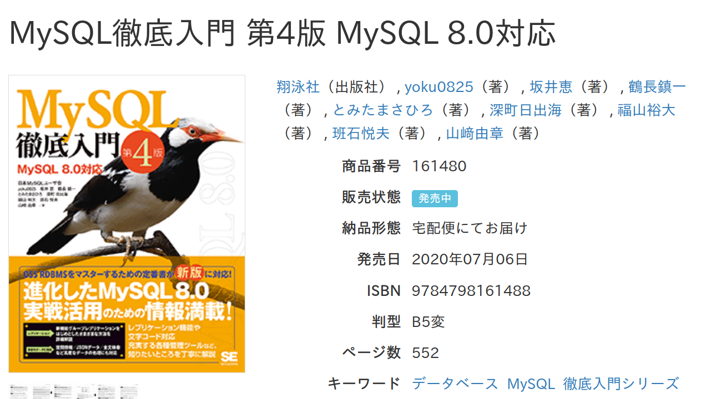

MySQLユーザ会の
これまでとこれから
MySQL Technology Cafe #9
2020-08-26
とみたまさひろ
自己紹介

-
とみたまさひろ
-
日本MySQLユーザ会の名ばかり代表
-
文字化け担当
-
Ruby / メール
最近の活動 その1
mrubyudf
Ruby で MySQL の UDF を書くためのツール
最近の活動 その2
MySQL Parameters
https://mysql-params.tmtms.net
- エラーメッセージ追加
- show variables 追加
- プラグイン/コンポーネントのパラメータも追加
最近の活動 その3
MySQL徹底入門第4版 🎉
https://www.seshop.com/product/detail/23085

- 5章「ユーザー管理」
- 11章「文字コードと日本語環境」
- など、全体の約 1/10
MySQLユーザ会ができるまで
記憶が怪しいので嘘かもしれません
1997年
会社の内製ツール作成＆メンテ
会社で使ってたDBがInf◯rmix(伏せ字)だった
ESQL/C - C に SQL を埋め込む謎言語
メッチャ使いづらい
「普通にCから使える無料のDBないかなー」
MySQL と Postgres95 を発見
当時 Google は無かったらしい
どうやって探したんだっけ…
テキトーに速度測ってみたら MySQL の方が速かった
「じゃあ MySQL でいいや」
しかし実はその日本語マニュアルの MySQL の
バージョンは古かった…
しかたなく英語のマニュアルを読む…
「英語わからん」
「訳しながら読んでると3行前のを忘れる」
「訳した文を書きながら読むか…」
マニュアルの全文訳完成
1997/10
質はそれなり
「せっかくだからウェブに公開しよう」
（たしか Monty にメールで公開許可もらったはず…）
日本語を検索すると結果がおかしい
(当時のUNIXではEUC-JPが主流)
デフォルトの latin1 だと
À(C0) = Á(C1) = Â(C2)…
= à(E0) = á(E1) = â(E2)…
EUC-JPの日本語文字は 0xA1〜0xFE
だ(A4C0) = ち(A4C1) = ぢ(A4C2)…
= め(A4E0) = も(A4E1) = ゃ(A4E2)…
「latin1 じゃなくて binary を使えば解決！」
(binary はすべての文字を区別)
ところが
LIKE "%海%" で「続く」がマッチ！
「%海%」: * B3 A4 *
「続く」: C2 B3 A4 AF
「バイト単位の比較ではダメだ…」
LIKE で文字単位にマッチングさせるパッチを作成
日本語 EUC パッチ誕生
1997/11
文字コード名は jeuc
1998年
個人宛にメールで問い合わせが来るけど
情報が個人間に閉じるのがもったいない
「誰かメーリングリスト作ってくれないかなー」
とウェブページに書いたら
「作ってみた」 by ソフトエージェンシー
メーリングリスト発足
1998/1
当時のフリーソフトウェア界隈のMLは
初心者に厳しくて殺伐としてた
それは嫌だったのでゆるふわなML運営
メーリングリストで「シフトJISを使いたい」
シフトJISは2バイト目に 5C(\) がある
表(95 5C)
「十倍の能力が噂の表計算ソフト」
「表n」→「95 \ n」→「95 改行」
LIKE だけじゃなくて文字列全般的な考慮が必要
似たようなマルチバイトcharset BIG5 があったので
それを真似てシフトJIS対応パッチを作成
UJIS&SJIS対応パッチ誕生
1998/3
この頃から jeuc から ujis に名前を変えたらしい
当時は ujis または eucjp が一般的だった
(ujis と sjis で韻を踏んでるし…)
3.21.30 にパッチが取り込まれる
1998/5
パッチをあてなくても普通に日本語が使えるように
リリース頻度が早くてパッチのメンテも大変だったのでパッチを送ったら取り込まれた
MySQLで日本語が使えてるのは私のおかげ(?)
(その後ユニコード対応時に実装され直したけど)
でもその後も configure --with-charset=ujis でエラーになるとかあったらしい
パッチが取り込まれたといっても安心できない…
MySQL/Ruby
1998/8
1998年頃から Ruby を使い始めたらしい
Perl を使ってたけどCライブラリとのバインディングが作りにくかったので Ruby を使い始めた
Ruby の MySQL ライブラリが無かったので作った
RailsとかでMySQLが使えてるのは私のおかげ(?)
(今はもう使われてないけど)
2000年
MLの過去ログをウェブで公開したい
どこのサーバー使おうか
せっかくだからドメイン名とる？
「日本MySQLユーザ会」とかでっちあげて
mysql.gr.jp とっちゃえ
日本MySQLユーザ会 発足
2000/3
ドメイン名を取るためには
代表者を決めないといけないので
流れで自分が代表者に
略称候補は色々あったけど
MySQLって、日本じゃマイナー(MINOR）だよね。それは昔の話さ。と言える日をまつ人の集団。
http://www.mysql.gr.jp/mysqlml/mysql/msg/1730
ということで MyNA に
(当時は PostgreSQL がメジャーだった)
MyNA の目的
- 日本での MySQL の普及を図る。
- ユーザ間のコミュニケーションを図る。
- MySQL の日本語化の検証/開発を行なう。
ユーザ会発足後
MySQL徹底入門
2000/4 に出版社から打診（早！
2001/1 発売
MySQL 3.23 リリース
2001/1
MySQL 4.0 リリース
2003/3
MySQL 4.1 リリース
2004/10
文字コードまわりの突然の変更！
- Unicode サポート
- カラム毎に文字コード指定可能
- 接続に合わせてサーバー側で文字コード変換
バージョン 0.1 しか違わないのに…
文字コード変換まわりで日本語の闇が表面化
「JISに無い文字が消える」
MyNA でパッチ作成したり
MySQL 5.0 リリース
2005/10
MySQL 5.1 リリース
2008/11
MySQL 5.5 リリース
2010/12
- utf8mb4 追加
MySQL 5.6 リリース
2013/2
- utf8mb4_unicode_520_ci
MySQL 5.7 リリース
2015/10
MySQL 8.0 リリース
2018/4
デフォルトが utf8mb4 に 🎉
文字化けさよなら
- utf8mb4_0900_ai_ci
- utf8mb4_0900_as_ci
- utf8mb4_0900_as_cs
- utf8mb4_ja_0900_as_cs
- utf8mb4_ja_0900_as_cs_ks
これから
MyNA の目的
- 日本での MySQL の普及を図る。
- ユーザ間のコミュニケーションを図る。
- MySQL の日本語化の検証/開発を行なう。
日本での MySQL の普及を図る。
十分メジャー
もうマイナーじゃない
MySQL の日本語化の検証/開発を行なう。
最近はだいたい問題ない
4.1 以降は文字コードまわりは安定してる
ユーザ間のコミュニケーションを図る。
これか！？
イベントは盛ん
主に sakaik さんと yoku0825 さんとオラクルさん
オンラインコミュニケーション
いまどきメーリングリストはないよね
メーリングリストの流量

Slack ？
外部サービスに依存するのは避けたい
登録しないと見れないのもアレ
🙄
考え中
😪
おわり
😴